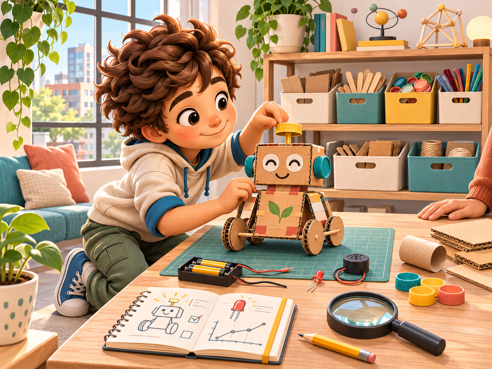

Necesidad
¿Qué problema pequeño quieres resolver?
 RAÍCES · Taller← Volver a Aprendiendo
RAÍCES · Taller← Volver a AprendiendoImaginar · construir · probar · mejorar
El cierre de cada ruta de ingeniería se convierte en un plan propio. No necesitas construir todo hoy: primero define el propósito, los límites y una prueba segura.

¿Qué problema pequeño quieres resolver?
Dibuja una versión posible y señala sus partes.
Decide qué observarás sin cambiar todo a la vez.
Registra qué funcionó y cuál será el siguiente ajuste.
Boceto libre
Una persona adulta revisa herramientas, baterías, piezas pequeñas, bordes y fuentes de calor antes de construir.